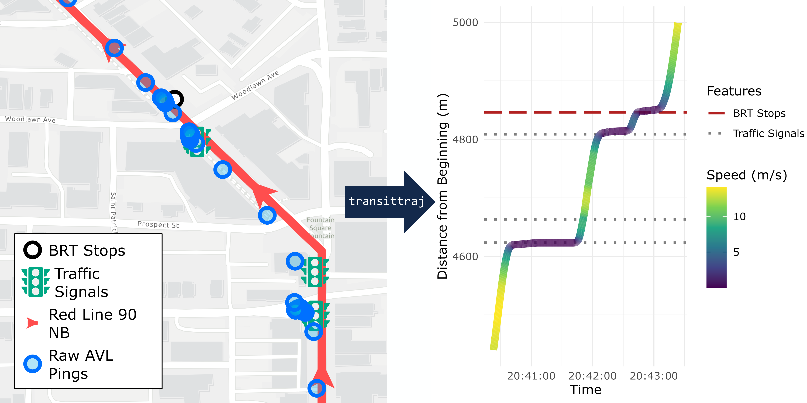
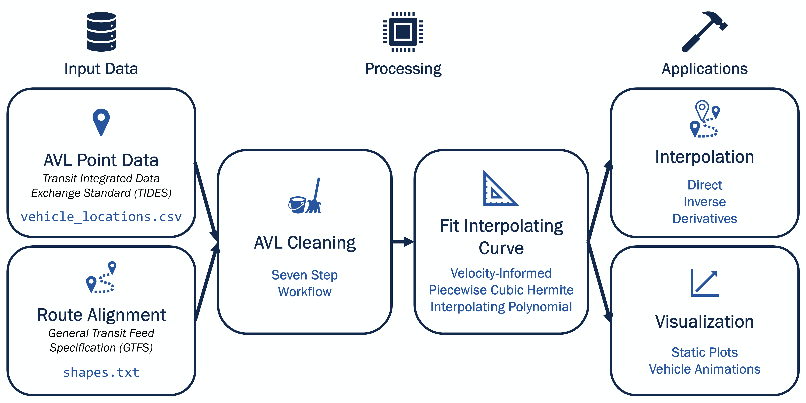

An R package for reconstructing and visualizing transit vehicle trajectories.
Introduction
Today’s transit vehicles generate a large amount of automatic vehicle location (AVL) data. This data is vital in planning and performance studies, but turning sparse and noisy GPS pings into meaningful performance metrics is difficult. transittraj fills this gap, integrating with existing open data standards, including GTFS and TIDES, to provide tools for cleaning AVL data and fitting continuous, monotonic, invertible, and differentiable trajectory curves. By doing so, transittraj provides versatile and powerful tools to analyze transit system performance and support decision-making.

transittraj turns noisy GPS data (left) into a trajectory (right) meeting the four requirements discussed below
Statement of Need
The primary goal of transittraj is to reconstruct trajectories of transit vehicles from AVL data. A trajectory is a function which describes the one-dimensional position (i.e., the distance from a trip’s beginning) of a transit vehicle over time. Vehicle trajectories are incredibly powerful and versatile tools, and are widely used by traffic engineers and operations researchers for planning and system performance studies.
Transit professionals, however, rarely have the opportunity to see detailed trajectories of their vehicles, and instead typically only receive finalized metrics – such as dwell times and segment-level travel times – from analytics platforms. If a practitioner wanted to apply trajectory fitting tools from parallel fields, they would likely encounter challenges: transit data adheres to unique formatting standards; very few open-source tools exist for handling transit vehicle location data; and, most importantly, common GPS processing techniques can oversmooth transit trajectories because AVL pings occur with the same frequency (15-30 seconds) as stop dwells, signal delays, and other stop-and-go cycles.
transittraj fills this gap by proposing a workflow with two main steps. The first is data cleaning, where we focus on correcting noise and errors in point observations. Second, we use cleaned position and speed measurements to fit an interpolating curve representing the vehicle’s trajectory. This curve has four important attributes:
Continuous: There should be no gaps in the trajectory for each trip.
Monotonic: The vehicle’s position should strictly increase.
Invertible: The trajectory should provide position as a function of time, or time as a function of position.
Differentiable: At any point on the curve, we should be able to interpolate for the speed of the vehicle.
transittraj aims to make these workflows as smooth and accessible as possible. We begin with data that adheres to industry standard data formats, including GTFS and TIDES, and functions are flexible but avoid techniques which require complex tuning. Finally, we provide tools to visualize and apply fit trajectory curves.

Overview of transittraj workflow
Check out the vignettes below to get started.
Getting Started with transittraj
Check out the following vignettes to learn more about how to use transittraj:
The AVL Cleaning Workflow (available offline at
vignette("data-workflow"))Using Trajectories (available offline at
vignette("intro-trajectories"))
Check out some case studies from the research team that demonstrate transittraj in real-world projects:
Check out the latest updates at our changelog.
Citation
transittraj is free and open source, but if you find the package helpful, we’d appreciate a citation:
citation("transittraj")
#> To cite package 'transittraj' in publications use:
#>
#> O'Brien B, Lehe L (2026). _transittraj: Reconstruct and Visualize
#> Transit Vehicle Trajectories_. R package version 1.0.0,
#> <https://utel-uiuc.github.io/transittraj/>.
#>
#> A BibTeX entry for LaTeX users is
#>
#> @Manual{,
#> title = {transittraj: Reconstruct and Visualize Transit Vehicle Trajectories},
#> author = {Benjamin O'Brien and Lewis Lehe},
#> year = {2026},
#> note = {R package version 1.0.0},
#> url = {https://utel-uiuc.github.io/transittraj/},
#> }